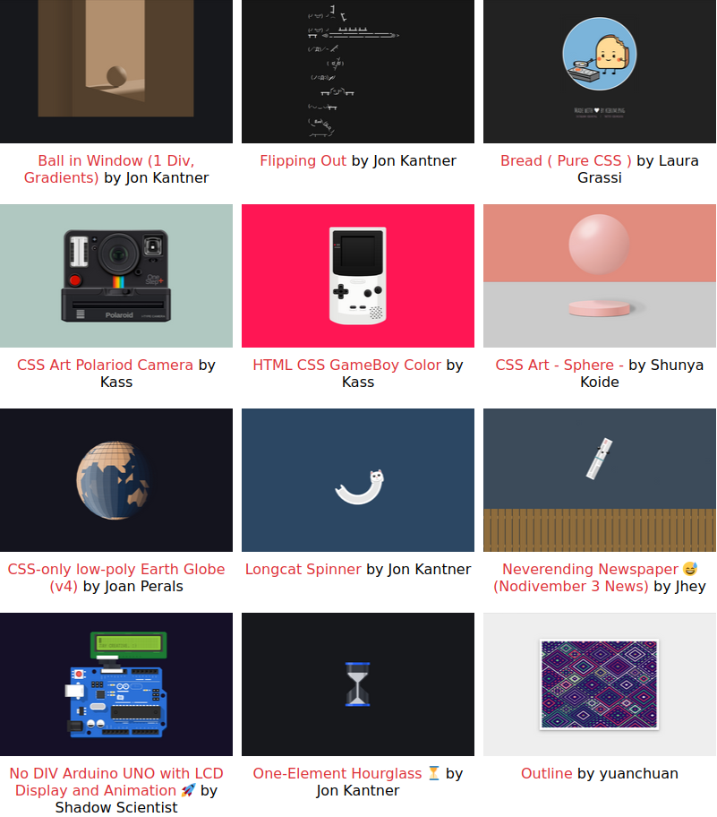

Cascading Style Sheets, or CSS, was a language introduced to the Web in the mid 90s for the purpose of separating a webpage's "form" or "presentation" from it's "structure" or "content". Initially it handled things like layout, color changes and typography, but today in the era of CSS3, it has evolved to become a much more expressive language capable of creating interactive effects and animations. In the web-development world, there are creative coders that like to challenge themselves and inspire each other to push CSS to its limits and produce playful works of "CSS Art", like CSS Art legend Diana Smith...
If you’ve ever seen ASCII art — those popular computer pictures formed from text and symbols on your keyboard — then you’ve seen how computer code can be used to create art. Believe it or not, we’ve come so far in the way that sophisticated computer languages can interpret commands that we can now use them to create stunning illustrations — like the ones developer Diana A. Smith creates.
Aja Romano (Vox.com)
Diana Smith's pieces are extremely detailed, and while other CSS artists strive for that sort of "skeumophic" realism with their pieces (Check out Kass Sanch's Polaroid Camera for example), most CSS artists produce more minimalist works like this sketch by Vangel Tzo or this sketch by Marjo Sobrecaray. CSS Art is most often cute and cartoonish, like this CSS cartoon taco by Victoria Bergquist or these couple of kitties by JustYourAverageOnion.
As mentioned above, modern CSS has the ability to create transitions and animations, which CSS artists often times use to bring their creations to life, like this swining cat or this pracning dog, both by David Khourshid.
The CSS art scene prides itself in writing CSS code to do things the creators of the language (the folks at the W3C CSS working groups) never intended it to be used for. For example, the CSS box-shadow property was created to allow web develoeprs to add shadows to any of their HTML elements. You can give an element more than one shadow by adding another set of box-shadow values to that property separated by a comma. Because it's possible to produce a shadow with hard edges (rather than the more conventional fuzzy edges) CSS artists realized this property could be used to create pixel art like this pixel art piece by Ben Evans or this, now infamous in the scene, pure CSS Mona Lisa by Jay Salvat. I put together a simple netnet sketch that demonstrates this technique in action.
In their quest to push CSS to it's limits, these artists often challenge themselves to create entire compositions by styling only a single HTML element, this is accomplished using CSS "pseudo-elements", specifically the ::before and the ::after pseudo-elements, which can be used to style a single element as though it was actually three different HTML elements, which gives the CSS artist more room to experiment. I put together a couple of netnet sketches to demonstrate this technique in action, this cartoonish sphere (inspired by css artist Agathe Cocco) and this realistic sphere (inspired by css artist Shunya Koide). For more examples of "single element" works, check out this Single div CSS ship by Lynn Fisher, or this or this Single Element Hourglass by Jon Kantner, or this Single Element Pure CSS MacBook Pro by Joshua Hibbert.
I've created a video tutorial where i reconstruct Joshua Hibbert's MacBook CSS Art step by step and discuss the different ways he (and others in the scene) leverage these CSS properties in unconventional ways. I've also put together a gallery of some of my favorite CSS Art pieces for inspiration. Click on the image below to see the full collection.
